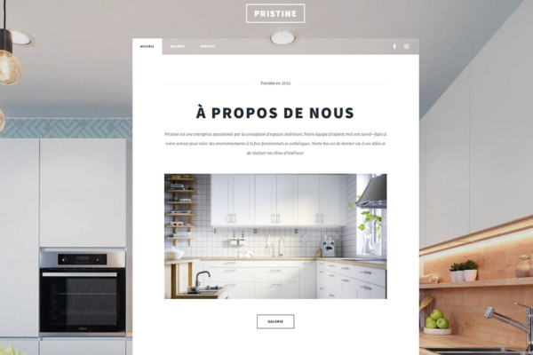
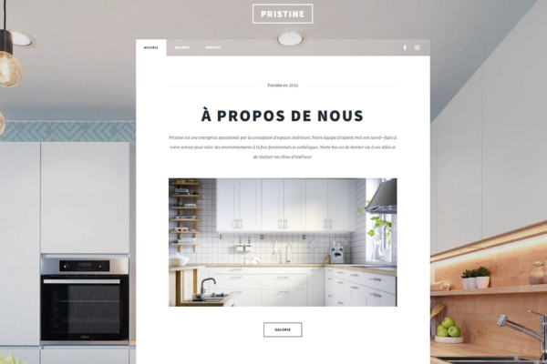

Description :
Site vitrine spécialisé dans l'aménagement d'espaces uniques qui allient fonctionnalité et esthétisme. Qu'il s'agisse de cuisines modernes ou d'autres aménagements intérieurs, chaque projet est conçu sur mesure.
- Points clés : Adaptation aux besoins du client, mise en valeur de l’esthétique, détails techniques.
- Technologies utilisées : HTML, CSS, Bootstrap, JavaScript.
-
Images/maquettes : Photos de projets terminés, vues de la page des services, de la galerie.
Consulter le projet
Style de Vie : Élégance à chaque pas
Description :
Un site dédié à la mode féminine, mettant en avant des collections modernes et élégantes qui répondent aux besoins des femmes contemporaines.
- Points clés : Design intuitif, navigation simplifiée, expérience utilisateur fluide.
- Technologies utilisées : HTML, CSS, JavaScript.
- Images/maquettes : Des images dans la page d’accueil, page À Propos et détails produit.
Consulter le projet
 
